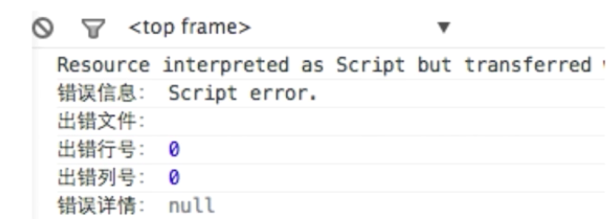

错误监控的几种说法：
- 如何保证产品质量
- 产品质量体系
1. 前端错误的分类
- 即时运行错误：代码错误
- 资源加载错误
2. 错误的捕获方式
2.1 即时运行错误的捕获方式
try ... catch需要部署到代码中window.onerror/addEventListener('error')DOM0/DOM2 的写法
2.2 资源加载错误
- object.onerror
- performance.getEntries() // 获取加载时常，间接返回加载错误
1
performance.getEntries().forEach(item => (console.log(item.name)))
用 document.getElementsByTagName('img') 减去上述已成功加载的图片资源，可以间接获得未加载成功的图片资源
- Error 事件捕获
1 | window.addEventListener('error', function(e){ |
注：error 事件不会冒泡，因此 window.onerror 无法捕获资源加载错误，只能在捕获阶段获取。
延伸：跨域的 js 运行错误可以捕获吗？错误提示什么，应该如何处理
答案：可以，只提示 script 错误，无法定位到具体错误

- 在 script 标签增加 crossorigin 属性
- 设置 js 资源响应头 Access-Control-Allow-Origin: *或指定域名
3. 上报错误的基本原理
3.1 采用 Ajax 通信的方式上报
3.2 利用 Image 对象上报(通常采用的方法)
举个栗子：1
(new Image()).src = "http://baidu.com/上报路径?参数"